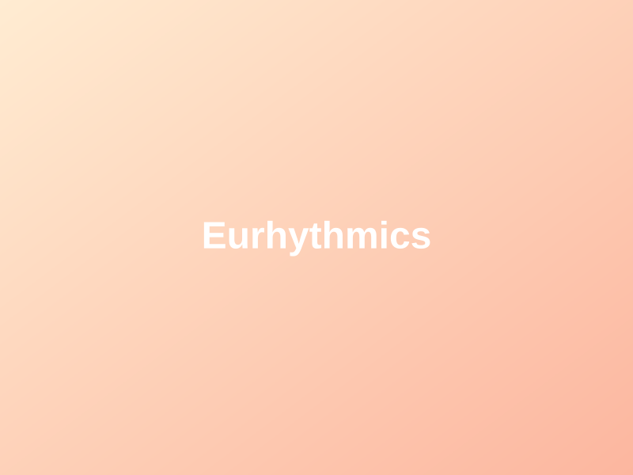

兒童音樂律動

課程特色
在快樂的氛圍中與音樂玩耍！這是一堂讓孩子用身體感受音樂的啟蒙課程。
- 肢體律動：跟隨音樂擺動身體，感受節拍的快慢強弱。
- 感官開發：透過聆聽不同風格的音樂，開啟孩子的聽覺與想像力。
- 樂器探索：接觸簡單的打擊樂器，體驗發聲原理與合奏樂趣。
- 專注力訓練：在遊戲規則中學習聆聽指令，培養專注力。
適合對象
4 至 7 歲幼童。不需任何音樂基礎。

在快樂的氛圍中與音樂玩耍！這是一堂讓孩子用身體感受音樂的啟蒙課程。
4 至 7 歲幼童。不需任何音樂基礎。